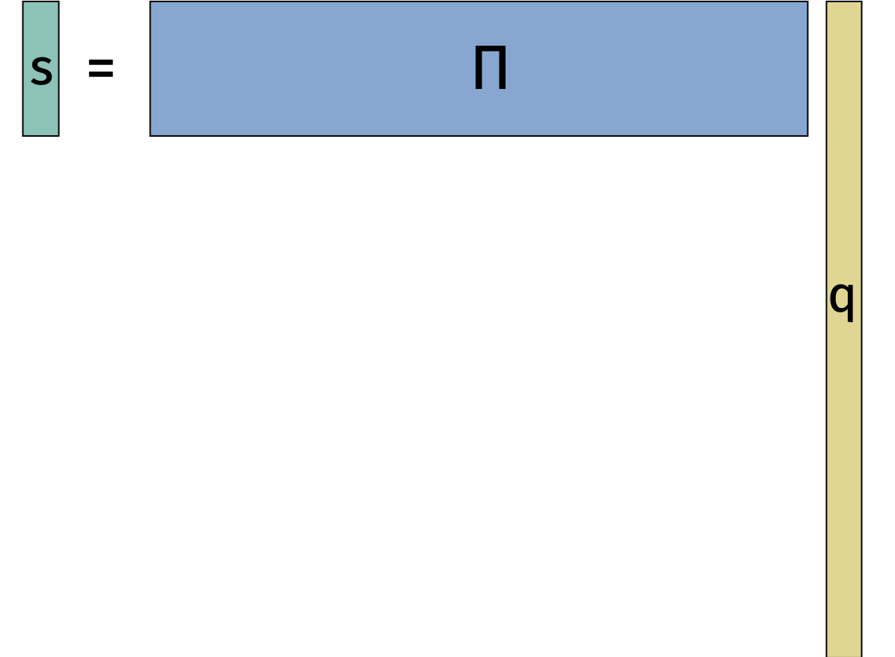
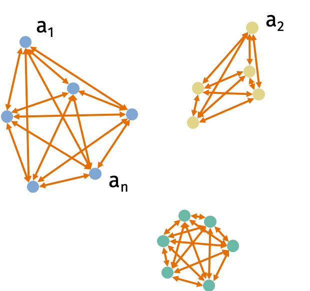
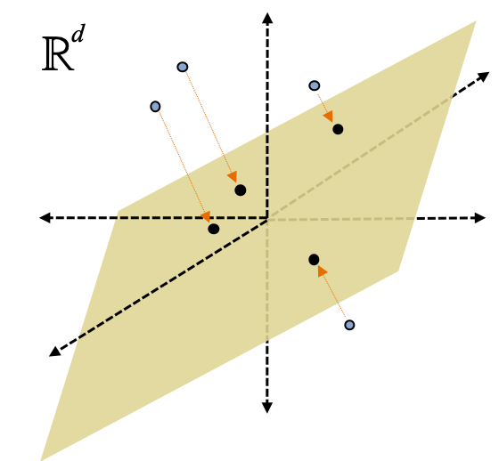

Dimensionality Reduction
Despite all the prior warning that low-dimensional space looks nothing like high-dimensional space, we’ll next learn about how to compress high-dimensional vectors into low-dimensional vectors.
We will be very careful not to compress the vectors too far. An extremely simple method known as the Johnson-Lindenstrauss random projection pushes right up to the edge of how much compression is possible.
Let’s see the Johnson-Lindenstrauss random projection in action.
Johnson-Lindenstrauss Lemma: Consider any set of \(n\) data points \(\mathbf{q}_1, \ldots, \mathbf{q}_n \in \mathbb{R}^d\). There exists a linear map \(\mathbf{\Pi}: \mathbb{R}^d \rightarrow \mathbb{R}^k\) for \(k = O\left(\frac{\log n}{\epsilon^2}\right)\) such that for all \(i,j\), \[\begin{align} (1-\epsilon) \|\mathbf{q}_i - \mathbf{q}_j\|_2 \leq \|\mathbf{\Pi} \mathbf{q}_i - \mathbf{\Pi} \mathbf{q}_j\|_2 \leq (1+\epsilon) \|\mathbf{q}_i - \mathbf{q}_j\|_2 \end{align}\] with probability 9/10.
The reason the result is called a lemma is because Johnson and Lindenstrauss used it as a stepping stone to proving a different result. However, the lemma is immensely useful in its own right and has become a fundamental tool in machine learning.
We can visualize the dimensionality reduction in the figure below.

The Johnson-Lindenstrauss lemma is useful when \(d\) is large and \(k\) is small because we go from a representation \(\mathbf{q}_i \in \mathbb{R}^d\) to a representation \(\mathbf{\Pi} \mathbf{q}_i \in \mathbb{R}^k\).
Since \((1+\epsilon)^2 = 1 + O(\epsilon)\) and \((1-\epsilon)^2 = 1 - O(\epsilon)\) for small \(\epsilon\), we can write an equivalent formulation of the Johnson-Lindenstrauss lemma statement for the squared \(\ell_2\)-norm:
\[\begin{align} (1-\epsilon) \|\mathbf{q}_i - \mathbf{q}_j\|_2^2 \leq \|\mathbf{\Pi} \mathbf{q}_i - \mathbf{\Pi} \mathbf{q}_j\|_2^2 \leq (1+\epsilon) \|\mathbf{q}_i - \mathbf{q}_j\|_2^2. \end{align}\]
Clustering Application
Consider the \(k\)-means clustering problem. We are given data points \(\mathbf{a}_1, \ldots, \mathbf{a}_n \in \mathbb{R}^d\). Let \(C\) be a set of clusters \(\{C_1, \ldots, C_k\}\). The cost of the cluster is \[\begin{align} \textrm{Cost}(C) = \sum_{j=1}^k \frac1{2 |C_j|} \sum_{u,v \in C_j} \| \mathbf{a}_u - \mathbf{a}_v \|_2^2. \end{align}\] The problem is to find a set of clusters \(C\) that minimizes the cost.

Solving the \(k\)-means clustering problem is NP-hard. However, there are many good approximation algorithms. But all the approximation algorithms have at least a linear dependence on the dimension of the points \(d\).
We can use the Johnson-Lindenstrauss lemma to reduce the dimension of the data. Then we can run the \(k\)-means algorithm on the low-dimensional data. Formally, we’ll solve \(k\)-means clustering on the data set \(\mathbf{\Pi} \mathbf{a}_1, \ldots, \mathbf{\Pi} \mathbf{a}_n\) and get a solution of clusters \(C = \{C_1, \ldots, C_k \}\). The cost of the approximate solution is \[\begin{align} \widetilde{\textrm{Cost}}(C) = \sum_{j=1}^k \frac1{2 |C_j|} \sum_{u,v \in C_j} \| \mathbf{\Pi} \mathbf{a}_u - \mathbf{\Pi} \mathbf{a}_v \|_2^2. \end{align}\]
Since the costs are all sums of squared norms, we can apply the Johnson-Lindenstrauss lemma and get that \[\begin{align} (1-\epsilon) \textrm{Cost}(C) \leq \widetilde{\textrm{Cost}}(C) \leq (1+\epsilon) \textrm{Cost}(C) \end{align}\] for all clusterings. The reason the result holds for all clusterings is because the cost of each clustering depends only on the norms of the differences between data points.
Suppose we use an \(\alpha\)-approximation algorithm to find clusters \(C = \{C_1, \ldots, C_k \}\) such that \[\begin{align} \widetilde{\textrm{Cost}}(C) \leq (1+\alpha) \widetilde{\textrm{Cost}}(\widetilde{C}^*) \end{align}\] where \(\widetilde{C}^*\) is the optimal clustering for the compressed data points.
Claim: The clustering \(C\) is a good approximation for the optimal clustering \(C^*\) for the original data points: \[\begin{align} \textrm{Cost}(C) \leq (1+O(\alpha + \epsilon)) \textrm{Cost}(C^*). \end{align}\]
Proof
Notice that we can relate the optimal clustering for the compressed data points \(\widetilde{C}^*\) to the optimal clustering for the original data points \(C^*\). We have \[\begin{align} \widetilde{\textrm{Cost}}(\widetilde{C}^*) \leq \widetilde{\textrm{Cost}}(C^*) \leq (1+\epsilon) \textrm{Cost}(C^*) \end{align}\] where the first inequality followed because \(\widetilde{C}^*\) is the optimal solution for the compressed data points and the second inequality followed from the application of the Johnson-Lindenstrauss lemma. Now we can show that the approximate solution we get on the compressed data points is a good approximation for the optimal solution on the original data points. We have \[\begin{align} \textrm{Cost}(C) &\leq \frac1{1-\epsilon} \widetilde{\textrm{Cost}}(C) \\ &\leq (1+O(\epsilon)) (1+\alpha) \widetilde{\textrm{Cost}}(\widetilde{C}^*) \\ &\leq (1+O(\epsilon)) (1+\alpha) (1+\epsilon) \textrm{Cost}(C^*) \\ &= (1+O(\alpha + \epsilon)) \textrm{Cost}(C^*). \end{align}\]
This is just one of the many Johnson-Lindenstrauss applications. Other applications include nearest neighbor search, compressed sensing, and dimensionality reduction for linear regression.
Distributional Johnson-Lindenstrauss Lemma
Notice that the Johnson-Lindenstrauss lemma is only helpful for us if we can efficiently compute the linear map \(\mathbf{\Pi}\). Fortunately, we can construct a linear map \(\mathbf{\Pi}\) that is easy to compute. One possible construction of \(\mathbf{\Pi}\) is a random Gaussian matrix where each entry \(\mathbf{\Pi}_{i,j}\) is drawn from \(\mathcal{N}(0,1)\) and rescaled by \(\frac1{\sqrt{k}}\) to preserve the norm of the vector.
The map \(\mathbf{\Pi}\) is oblivious to the data set. This is different from other techniques like PCA, and machine learning in general, that depend on the data set.
There are many other possible choices that work for the random projection: We can use random binary variables, sparse random matrices, and pseudorandom matrices. Each construction has its own advantages and disadvantages.

Intuitively, the close points will remain close after the projection and the far points will remain far.
The stepping stone to proving the Johnson-Lindenstrauss lemma is the distributional Johnson-Lindenstrauss lemma.
Distributional Johnson-Lindenstrauss Lemma: Let \(\mathbf{\Pi} \in \mathbb{R}^{k \times d}\) be chosen so that each entry is drawn from the standard normal \(\mathcal{N}(0,1)\) and rescaled by \(\frac1{\sqrt{k}}\). If we choose \(k = O \left( \frac{\log(1/\delta)}{\epsilon^2} \right)\), then for any fixed \(\mathbf{x} \in \mathbb{R}^d\), with probability \(1-\delta\), \[\begin{align} (1-\epsilon) \|\mathbf{x}\|_2^2 \leq \|\mathbf{\Pi} \mathbf{x}\|_2^2 \leq (1+\epsilon) \|\mathbf{x}\|_2^2. \end{align}\]
We can use the distributional JL lemma to prove the JL lemma: Let \(\mathbf{x} = \mathbf{q}_i - \mathbf{q}_j\) for some \(i,j\). Then \[\begin{align} (1-\epsilon) \|\mathbf{q}_i - \mathbf{q}_j \|_2^2 \leq \|\mathbf{\Pi} \mathbf{q}_i - \mathbf{\Pi} \mathbf{q}_j \|_2^2 \leq (1+\epsilon) \|\mathbf{q}_i - \mathbf{q}_j \|_2^2. \end{align}\] This only works for a single pair of points but there are roughly \(n^2\) pairs of points that we care about. So setting \(\delta = \frac1{10 n^2}\) and applying the union bound gives the JL lemma with \[ O\left(\frac{\log (1/\delta)}{\epsilon^2}\right) = O\left(\frac{\log n} {\epsilon^2}\right). \]
With the distributional JL lemma, we can also prove the result we used before while analyzing a Gaussian random variable. (To stay consistent with the way we presented the JL lemma, say that \(\mathbf{g} \in \mathbb{R}^k\).) We claimed that: \[\begin{align} \Pr \left( \| \mathbf{g} \|_2^2 \leq \frac12 \mathbb{E}[ \| \mathbf{g} \|_2^2 ] \right) \leq \frac{1}{2^{c k}} \end{align}\] for some constant \(c\).
To convert this to the language of the distributional JL lemma, set \(\epsilon = \frac12\) and divide both sides of the inner inequality by \(k\). Recall we showed that \(\mathbb{E}[ \| \mathbf{g} \|_2^2 ] = k\). So \[\begin{align} \| \mathbf{g} \|_2^2 \leq \frac12 \mathbb{E}[ \| \mathbf{g} \|_2^2 ] \Leftrightarrow \| \mathbf{g} \frac1{\sqrt{k}} \|_2^2 \leq \frac12. \end{align}\]
Notice that the vector \(\mathbf{g} \frac1{\sqrt{k}}\) is a random vector with each entry drawn from \(\mathcal{N}(0,1)\) and rescaled by \(\frac1{\sqrt{k}}\). We can think about this event as multiplying a standard basis vector by our random projection matrix \(\mathbf{\Pi}\). Then the distributional JL lemma gives \[\begin{align} \Pr \left( \| \mathbf{g} \|_2^2 \leq \frac12 \mathbb{E}[ \| \mathbf{g} \|_2^2 ] \right) = \Pr \left( \| \mathbf{g} \frac1{\sqrt{k}} \|_2^2 \leq \frac12 \right) \leq \delta. \end{align}\] We know \(k = O(\log(1/\delta))\) so solving for \(\delta\) gives \(\delta = \frac1{2^{c k}}\) for some constant \(c\).
Proving the Distributional JL Lemma
We have now reduced proving the JL lemma to proving the distributional JL lemma. That is, we want to argue that \[\begin{align*} (1-\epsilon) \|\mathbf{x}\|_2^2 \leq \| \mathbf{\Pi} \mathbf{x} \|_2^2 \leq (1+\epsilon) \|\mathbf{x}\|_2^2. \end{align*}\] with probability \(1-\delta\).
We’ll start by showing that \(\mathbb{E}[ \| \mathbf{\Pi} \mathbf{x} \|_2^2] = \|\mathbf{x}\|_2^2\). Let \(\frac1{\sqrt{k}} \mathbf{\pi}_i\) be the \(i\)th row of \(\mathbf{\Pi}\). By the way we built \(\mathbf{\Pi}\), we have that each entry in \(\mathbf{\pi}_i\) is drawn from a standard normal distribution \(\mathcal{N}(0,1)\). We can then write
\[\begin{align*} \mathbb{E}[ \| \mathbf{\Pi} \mathbf{x} \|_2^2 ] = \sum_{i=1}^k \frac1{k} \mathbb{E}[ \langle \mathbf{\pi}_i, \mathbf{x}\rangle^2 ] = \frac1{k} \sum_{i=1}^k \mathbb{E}\left[ \left( \sum_{j=1}^d \pi_{i}[j] \mathbf{x}[j] \right)^2 \right] \end{align*}\] where \(\pi_{i}[j]\) is the \(j\)th entry of \(\mathbf{\pi}_i\) and is drawn from the standard normal distribution.
What type of random variable is this sum? We will use the following useful fact about Gaussians.
Fact (Stability of Gaussian Random Variables): Consider Gaussian random variables \(X_1 \sim \mathcal{N}(\mu_1, \sigma_1^2)\) and \(X_2 \sim \mathcal{N}(\mu_2, \sigma_2^2)\). Then \[X_1 + X_2 \sim \mathcal{N}(\mu_1 + \mu_2, \sigma_1^2 + \sigma_2^2).\]
The fact is intuitive but the proofs are involved.
We can apply this fact to our sum above. In particular, let \[\begin{align*} Z_i = \sum_{j=1}^d \pi_{i}[j] \mathbf{x}[j]. \end{align*}\] We will briefly argue that \(\pi_{i}[j] \cdot \mathbf{x}[j] \sim \mathcal{N}(0, \mathbf{x}[j]^2)\). If we assume that \(\pi_{i}[j] \cdot \mathbf{x}[j]\) is still a Gaussian random variable then we know the expectation is \(0\) by linearity of expectation and the variance is \(\mathbf{x}[j]^2\) since \(\textrm{Var}(c X) = c^2 \textrm{Var}(X)\) for any random variable \(X\) and constant \(c\). We will use this observation and apply the stability of Gaussian random variables to see that \[\begin{align*} Z_i \sim \mathcal{N}(0, \|\mathbf{x}\|_2^2). \end{align*}\] Then we can write \[\begin{align*} \mathbb{E}\left[ \| \mathbf{\Pi} \mathbf{x} \|_2^2 \right] = \frac1{k} \sum_{i=1}^k \mathbb{E}[Z_i^2] = \frac1{k} \sum_{i=1}^k \| \mathbf{x} \|_2^2 = \| \mathbf{x} \|_2^2. \end{align*}\] Here, we observed that \(\textrm{Var}(Z_i) = \mathbb{E}[Z_i^2] - \mathbb{E}[Z_i]^2 = \mathbb{E}[Z_i^2] = \|\mathbf{x}\|_2^2\) since \(\mathbb{E}[Z_i] = 0\).
Now that we know the expectation of \(\| \mathbf{\Pi} \mathbf{x} \|_2^2\), we will apply a concentration inequality to show that the random variable \(\| \mathbf{\Pi} \mathbf{x} \|_2^2\) concentrates around its mean. We will use a specialized concentration inequality for chi-squared random variables with \(k\) degrees of freedom which are simply sums of \(k\) squared Gaussian random variables.
Concentration of Chi-squared Random Variables: Let \(Z\) be a scaled chi-squared random variable with \(k\) degrees of freedom. Then \[\begin{align*} \Pr \left( |Z - \mathbb{E}[Z] | \geq \epsilon \mathbb{E}[Z] \right) \leq 2 e^{-\epsilon^2 k / 8}. \end{align*}\]
In our case, \[\begin{align*} Z = \|\mathbf{\Pi x}\|_2^2 = \frac1{k} \sum_{i=1}^k (\langle \pi_i,\mathbf{x} \rangle)^2 = \frac1{k} \sum_{i=1}^k Z_i^2. \end{align*}\]
Applying the concentration inequality to \(Z\), we have \[\begin{align*} \Pr(|\|\mathbf{\Pi x}\|_2^2 - \| \mathbf{x}\|_2^2 | \geq \epsilon \| \mathbf{x}\|_2^2) = \Pr(|Z - \mathbb{E}[Z] | \geq \epsilon \mathbb{E}[Z]) \leq 2 e^{-\epsilon^2 k / 8} = \delta. \end{align*}\]
Solving for \(k\), we have \[\begin{align*} \delta = 2 e^{-\epsilon^2 k / 8} \Leftrightarrow \log \frac2{\delta} = \epsilon^2 k / 8 \Leftrightarrow k = \frac{8}{\epsilon^2} \log \frac2{\delta}. \end{align*}\]
We have now shown the distributional JL lemma. But we may find our result surprising because we previously saw how high-dimensional geometry differs wildly from low-dimensional geometry.
In order to reconcile these two results, let’s imagine the following hard case of \(n\) mutually orthogonal unit vectors in \(\mathbb{R}^d\). Let \(\mathbf{x}_1, \ldots, \mathbf{x}_n \in \mathbb{R}^d\) be mutually orthogonal vectors so that \[\begin{align*} \| \mathbf{x}_i - \mathbf{x}_j \|_2^2 = 2. \end{align*}\] The JL lemma tells us we can compress these vectors to \(k = O(\log n / \epsilon^2)\) dimensions while preserving the distances up to a factor of \(1 \pm \epsilon\). From our result for nearly orthogonal vectors, we know that there are \(2^{O(\epsilon^2 \log n /\epsilon^2)} \geq n\) vectors that are \(\epsilon\) orthogonal in \(O(\log n / \epsilon^2)\) dimensions. So the JL lemma pushes us just to the limit of the dimension we can compress to while still approximately preserving inner products.
An alternate view is that, without additional structure, we expect that learning in \(d\) dimensions requires \(n=2^d\) data points. If we really had a data set that large, then the JL lemma would be vacuous since \(\log n = d\).
The JL lemma tells us how we can preserve \(\ell_2\)-norm distances between points. We’ll next see how we can preserve similarity between points.